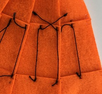
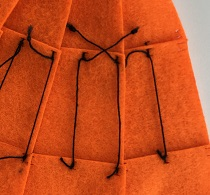
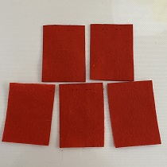

まずは基礎の基礎から。巾着袋は直線縫いだけで作るからきっと簡単に作れる‼
工程
型紙を作る。それを布に写す。切る。
横を縫う
上を縫う
空きの処理をする
マチをつくる
紐を通す
失敗
私は勘違いをしていた。
横を縫い、空きの処理をしてから、上を縫わないと空きの処理ができないのだ。間違いをしていた…。もちろんほどき直して縫う。ショック…。工程間違えると縫えなくなるから、気をつけないといけない。
意見
★どんな方法で、何ができるのかよくわからないまま作業しなければならなくなる。★
解決：一番に工程を書く。
★見づらい★
解決：写真をもっと増やす。(写真を増やすためにもう一度作成します。)動画とか撮れたらいいなぁ。
布を切った。レーザーカッターのパワーは10で、スピードは1です。このくらいだと焦げないで切れるみたい。
布に彫刻をして、出来上がり線を描きたいと思ったけど、上手くいかない。原因として考えられるのは、布が薄いことと、
あまりレーザーカッターを使ったレシピとはいえなし、たぶんネット上にたくさん落ちてるよね。またミシンのワークショップみたいなのやるとしたら使えると思ってまとめてみた。

文章と写真だけで説明していくの難しいな…。巾着袋の反省を生かしてたくさん写真撮ったけど、どの部分を説明するとわかりやすいってのがよくわからない…。
刺しゅうのデザインは各自で考えてほしいからあまり図案をのせたくないな…。一つデザインがあるとそれに人は引っ張られやすくなるから創造の時間を邪魔しかねない…。しかし、じぶんで創造する事が難しい人もいるわけだからそれも考慮した方がいいのも確か。葛藤だな。
トルソーに布を巻いて服を作る
サイズ感わからなくて断念。紙粘土で作った方が簡単だった。
手縫いで服を作ることは可能だ。実際、多くのレシピが存在するし、家庭用ミシンでできることは手縫いでできると言っても過言ではない。
しかし、手縫いで作るためには目をそろえて縫う技術がいる(目がそろわないと丈夫にできないし、仕上がりも悪い)。なにより、時間がかかりすぎる。昔の人はすごいなとしか言いようがない。


一枚の布を一周ぐるっと回るように作る服。これならボタンをつけるだけで服が立体になる。ボタンホールの部分だけは、実際サイズで作ると組立られるボタンがないため、5㎜で設定されている。ボタンの代わりにビーズを用いた。
これは実際サイズの10分の1サイズで作られている。マネキンに紙を巻き付けて型紙を作成してそこからデータを作成した。しかし、実際に出してみると、腕の周りが窮屈で、首回りも布が余っていたりとかなりよくない。無理に着せてる感満載。修正と調節が必要。
型紙を修正してみた。布でやると高いので、とりあえず、コピー用紙を切り出した。
②では、肩の部分を前を長く、後ろを短く修正。それと前の襟ぐりを上にあげた。初めて切り出したときよりは襟ぐり、肩回りがすっきりする。しかし、後ろの襟ぐりがきつそうなのと、肩が身体に沿わない。
③では、肩を斜めに3ｍｍ切って、体に添わせるようにした。また、後ろの襟ぐりを若干下げた。②より身体に添うようになった。しかし、紙だと布より柔軟性がないため、完全に体に沿っているかどうかを見ることができない。③の型紙を今度は布で切ってみる必要がある。


という訳で、フェルトで切ってみた。試作1号より布が厚いため若干見え方は違う。肩の部分のフィット感も悪くない感じ。実際サイズで作るなら、少しだけそれぞれ穴の部分を大きくしてもいいかなって感じだ。あとはこのボタンで留めるだけワンピースをどう生かしていくかだ。
データ
髪の毛の編み方の一つである、編み込みを使って布同士を結び付けられないかと考えた。試作としてはまずまずの出来ではないだろうか。
フリンジになっている部分は30㎜の長さで5㎜の太さがある。30㎜だと編み込みに参加させる回数が1回しかなかったため、この試作は丈夫ではない。せめて3回くらい編むことができればもう少し丈夫かもしれない。編み込むためにはそこそこの長さがいることが分かった。あと、編み込むのが大変だった。どの紐を次に編むのかを目印をつけておかないとわからなくなる。もっと簡単な方法があればいいなと思った。
フリンジの長さを80㎜、太さを3㎜にした。編むととても丈夫にできることがわかるが、私が編むとどうしても片方に力が寄ってしまって、まっすぐ編むことができない。また、編み込むフリンジの本数が太くなるとその分編み込んでいるところが太くなるため、着にくそうだなって思った。案としてはいいけど、没かな…。
データ 

台形の底辺を少しずつ長くしていったら、直線以外の形もできるのではないかという実験。結果はうまくいった。予想通り。これ、このまま大きくしてスカート作っても可愛いな。重なりの部分が多くてちょっと甲冑感あるけど。スカートだから簡単だけど、例えば体のラインに沿うシャツみたいなのを作るときはもっと難しそう。
データファーの素材は大変、はさみでは切りにくい。レーザーカットなら、切り口から毛がボロボロしなくていいだろうと思い、やってみた。
せっかくならつけ襟にしようと思い、裏布も切った。ファーは布だけがきれいに切れる。切り方のポイントとして、
ファーじゃない方を上に向けてセットすること
焦点を当てる位置を、布の表面にすること(深く沈めすぎないこと)
がポイントとなる。
切り出したら、最初に肩の部分をそれぞれくっつける。そして、裏と表を合体させる。襟が来る部分は残しておく。そして襟をつける。ファーの布が伸びてしまって、同じサイズで切ったはずなのにうまくいかない…。伸びる生地は難しい。
ボタンはレーザーで切ってみた。しかし、裏表が二枚になっていると、ボダン止めしにくい。さらに裏布がほつれてきたので、ボタンホールは手縫いで作ることにした。
 もふもふでかわいい。
もふもふでかわいい。
民族衣装について書かれた本にタイのポンチョが載っていた。それを参考にトップスを作ってみた。袖に麻の模様を入れる。

切るときは、一度に二枚できる。上半分と下半分という感じで切った。どうしても上下でずれてしまったけど、わきの部分は縫うので、問題なしです。


襟もとにも柄を入れたいね。直線縫いだけで作れるので、こういうのをワークショップでやったら面白いな。
データプリーツを作るのって案外面倒だなと思って。何かボタンとかで簡単に折り目をつけれたらいいなと思って考えた。

試作をフェルトで作ってみた。小さいけど、ボタンホールがついている。左右に二個づつボタンをつけるから、それに合わせて切り口を作る。
組み立てるとこのような感じです。着るときは、ボタンをはずして着る。分厚い布ならベルト部分は不要かと。パーツをくっつける横の直線縫いと、ボタン付けくらいで簡単にできるはず。
データ簡単に想像できる方法は、二つ折りにする、もしくは線を繋げて切ることだ。

こちらは二つ折りにして切る方法。なるべく布と布が浮かないようにするためアイロンがけを徹底した。切るときに難しかったのは、表が切れても裏側が切れないことだ。出力を一枚の時より強くする必要がある。しかし強いと、布の内側になった部分が焦げてしまう。しかし、ぴったり合同に切れから、薄い布には効果的だろう。


こちらは直線を繋げるように切ったもの。若干ずれる。1ミリ程度なら縫うときにカバーできるので支障なしとみていい。これなら分厚い布も確実に切ることができる。問題は繋げるときのずれをどう解消するかだ。
板に張った時
この方法、上手くいくようでかなり難しい。柄がないときは大体出合わせられるが、柄があると完ぺきに揃えないと、変になる。この切った時は一センチくらいずれてしまった。合わせておいたつもりなのになぜ…。布に型紙を置いて、そのまま切った方が簡単な気がしてきてつらい。ほつれを止めることはできるが、裾や袖など一部だけでいいし、レース地みたいに切ることは可能だけど、切り離しちゃいけないところかどうか知るには試作が必要だ。大きいサイズを切り出すのは、無理があるのではないかと思えてきた。もしくは、もっと大きい範囲が加工できるものでないと…。
シャツの裾部分をレースにしてみたくて…。もとの形はすでに型紙を当てて手作業で行った。裾の部分を加工してみた。まず、これは失敗している。柄の真ん中がずれてしまっている。サイズは型紙の裾を測って作ったのだが、それが違っていたみたいだ。追加で柄を切ってみたが、やはり曲がる。柄の真ん中と布の真ん中を合わせて加工すべきだった。このままではどうにもならないので、うまく隠して作るほかない。
洋服のデザイン等の専門学校の中にある購買部。母から布が安い(学生向けの価格で一般でも購入可能)と聞いたので行ってみた。学校の中にあるため入るのに緊張した。
布のジャンルはドレスやジャケットなど割とフォーマルな恰好向けな感じだった。スーツの布、ウエディングドレスの布とか売ってた。価格は大体で見たが、私が欲しい布は家の近くの生地屋と変わらず…。私が欲しいのは、レーザーカッターでの加工に向く丈夫で安くて化学繊維の無地でカラーが豊富ってところだからちょっとコンセプトが違ったかな…。
杉野学園の展示物やコンテストの結果の写真とか、すごく派手でかっこよかった。これがステージ映え。デザインの専門学校の文化祭とか行くともっと勉強できるかもな。(展示してあった作品はガラス越しに少し見えた程度。フリルの使い方、色の合わせ方、生地の使い方の発想が一般に売っているアパレルのそれとは違う。)
ジーンズに彫刻してオリジナルの模様を入れてみた。そしてそれを袴スカートに仕上げてみた。結構加工範囲広いのと、スカートにするならもっと中心寄りに模様を入れた方がいい。
色のトーンを落としてみたかったので、紅茶染めをしてみた。紅茶を煮出して、その染液で布を煮詰めれば色がつくはず。
すっかり取り忘れて、火を止めて一晩おいてしまった。色は肌になじみやすい色になる。
デジタル全く関係ないけど。(中華風今流行ってるよね)可愛くできたので載せます。片開の服の理解が深まった。ちなみに、この服の脇部分は紐で縛る感じになってていい感じ。紫×黄色みたいなイメージで作り始めたのに、結局赤がしっくりきてこうなった。下のスカートはタンポポちゃんのスカート。